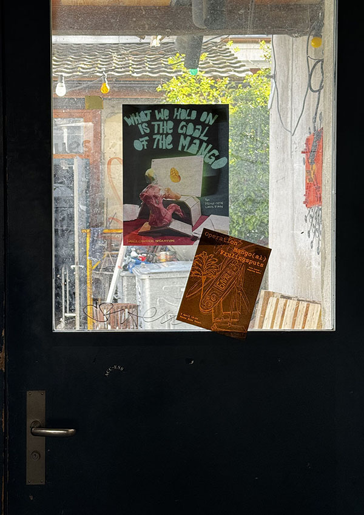
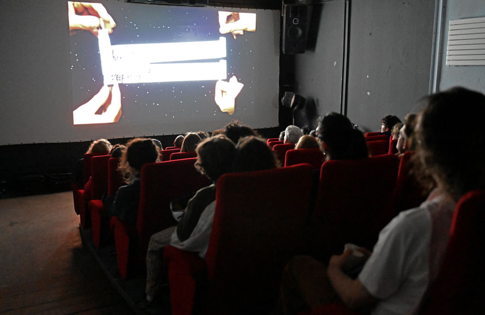
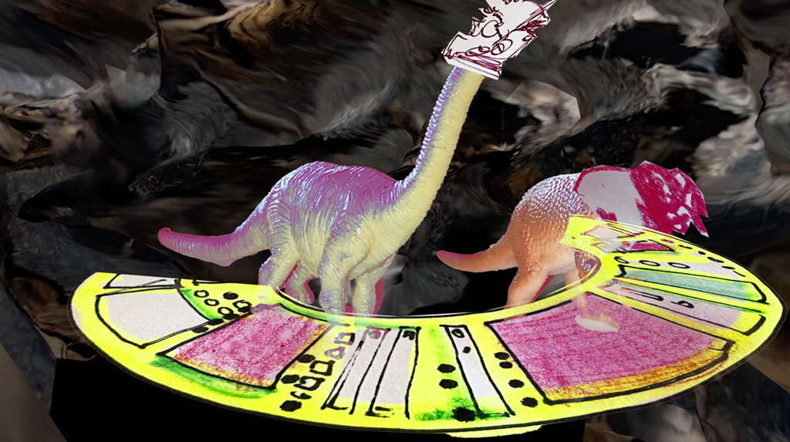
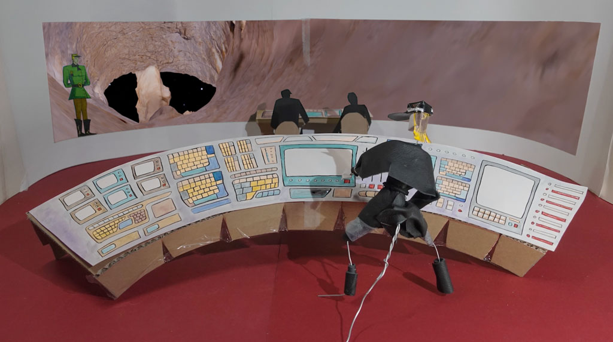
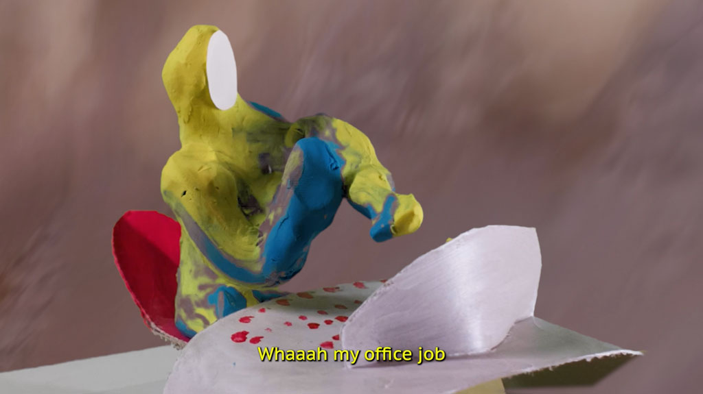

INFO
Small Cameras Operation (SCO) is a film and publishing initiative by Hsiao-Yen, Linus Finn, and Lucie.
We make films, screen films, mix media, and create publications — and, very important to note, we’ll do Apéros with and for YOU.
Coming from Switzerland and Taiwan, we see the enjoyment of cross-cultural collabs, while also being aware of the labour required to integrate cultural frontgrounds💥.
That’s why we aim to bring an AUTHENTIC😉 and diverse cultural experience to the table 🍽️
Voilà.
Est-ce que vous êtes prêt.e.s?
CREDITS
Collective member: Hsiao-Yen Yao / Linus Finn / Lucie Lin




